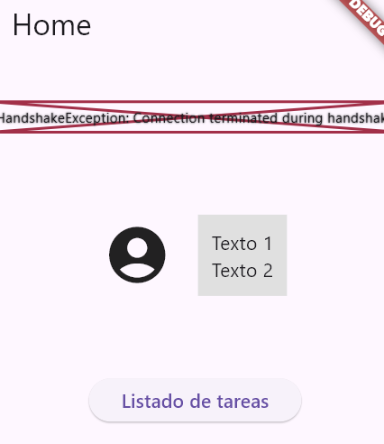

Prueba: Evaluativa
Asignatura: Desarrollo Apps
Resultado de Aprendizaje: Flutter Básico
Nombre alumno:
Calificación:
Se proporciona un proyecto Flutter base. Todos los ejercicios deben resolverse modificando el código existente.
Preparación
1. Creación del repositorio Github
- Crea un repositorio en GitHub llamado FLUTTER_EXAMEN.
- (Requerido para evaluación) Configúralo como público.
- (Requerido para evaluación) Sube la url del repositorio a la tarea del campus.
- Realiza las modificaciones necesarias para resolver el ejercicio.
- Haz commit con el mensaje: "fix commit #numeroEjercicio".
- Haz push a la rama de Github de tu repositorio.
2. Primer commit
- Clonar el repositorio examen proporcionado por el profesor: https://github.com/Stucom-Pelai/examen_flutter_dam2
Introducción
En la empresa de desarrollo ha habido un ataque y se ha roto el proyecto. La aplicación tenía una pantalla Home, una de listado de tareas y otra con el detalle de cada una.
Tu misión es recuperar el proyecto y reconstruir la aplicación lo más parecido posible a como era antes del ataque, cumpliendo los siguientes requisitos:
1. Vistas (3 puntos)
En el archivo lib/screens/home_page.dart, completa y modifica
la interfaz para que se parezca a la siguiente imagen, cumpliendo los siguientes requisitos:
- Uso de columnas y filas para organizar los elementos.
- Uso de widgets de texto con diferentes estilos (tamaño, peso, color).
- Uso de un widget de imagen para mostrar el logo de la aplicación.
- Uso de axisAlignment y crossAxisAlignment para alinear los elementos correctamente.

2. Navegación y rutas (3 puntos)
Implementa un sistema de navegación basado en rutas. Este servicio tiene que estar aislado en su propio archivo (routes.dart)
- Busca los errores y corrígelos para que el código funcione correctamente. Explica brevemente cada error y su solución.
3. Pasar parámetros (1 punto)
- La pantalla de detalle de cada tarea debe mostrar el nombre de la tarea y su índice en la lista, para ello, debes pasar estos parámetros desde la pantalla de listado de tareas.
4. Listas (3 puntos)
La pantalla de listado de tareas tenía el siguiente diseño, con los siguientes requisitos:
- Cada elemento debe mostrar el texto del elemento y su índice en la lista.
- Añade separación visual entre los elementos de la lista.
- Si la lista está vacía, debe mostrarse un mensaje centrado indicándolo.
- Al pulsar un elemento, debe navegarse a la pantalla de detalle.
IMPORTANTE
- No se puede modificar la estructura del proyecto original.
- Se tienen que justificar todos los cambios realizados.
- Entrega: en el campus se subirá la url del repositorio y las justificaciones en el archivo RAEADME.